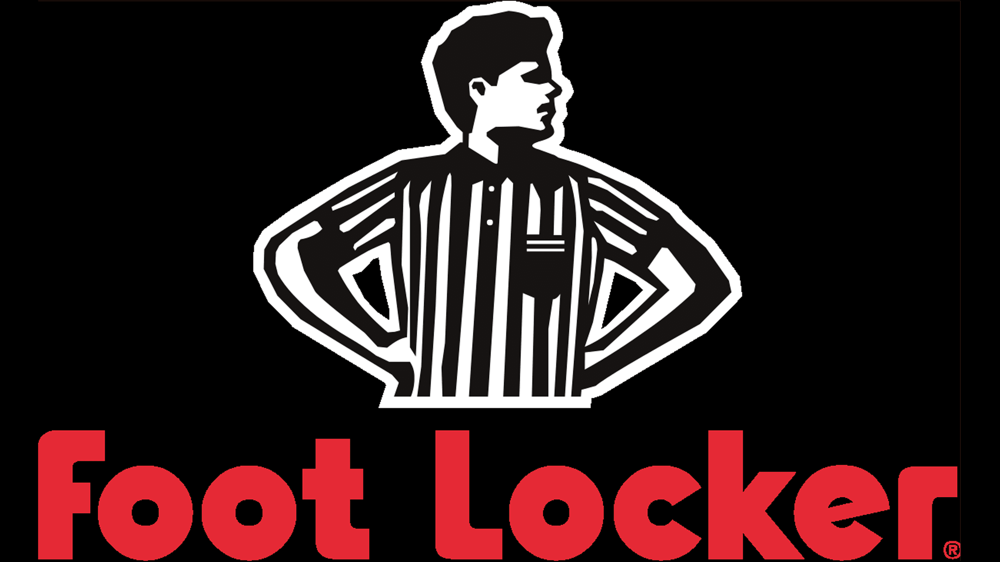

ACME

Working at ACME was my first job I worked at. I worked the salad bar at that time. I would prepare the salad bar for people, prepare pre-cut fruit bowls for customers, and try to keep my station where I worked well santized and clean.
UPS
I worked as a package handler at UPS. I would unload and load packages from trucks and airplanes. Working the nightshift here it would open up time for me to work a second job during the day. We would work 5 hours with no break or lunch.
Foot Locker
While working at UPS at night, I would work at footlocker during the day. Selling shoes and clothes to people. Working on commission and becoming a supervisor at footlocker it was fun for a second. This was my first job where engaing and conversing with customers has become a skill.
Walmart
.png)
After quitting my jobs with UPS and footlocker I worked at walmart for 6 months. I worked my way up that quick to where I almost got a supervisor position. I worked the backroom there and had full control over the room. Mae sure it stayed clean and organized. Also made sure all the inventory from the trucks where put out on the floor on time.
Amazon Driver

As a Amazon driver I wasn't there for long. The day to day there was we go in 7 am to warehouse to lod up our trucks and grab our routes. Drive to the area where we're delivering and deliver over 250 packages average.
Comcast
.jpeg)
My current job that I am at now is Comcast. I am a cable tech of 4 years and hoping I can move up within comcast in a different path. Hopefully in a different field. This job has changed my life, a lot of things and have and have learned has came from this job. Now with me learning this skill, my mindset is differnt now a days, with me trying to learn how to code now.